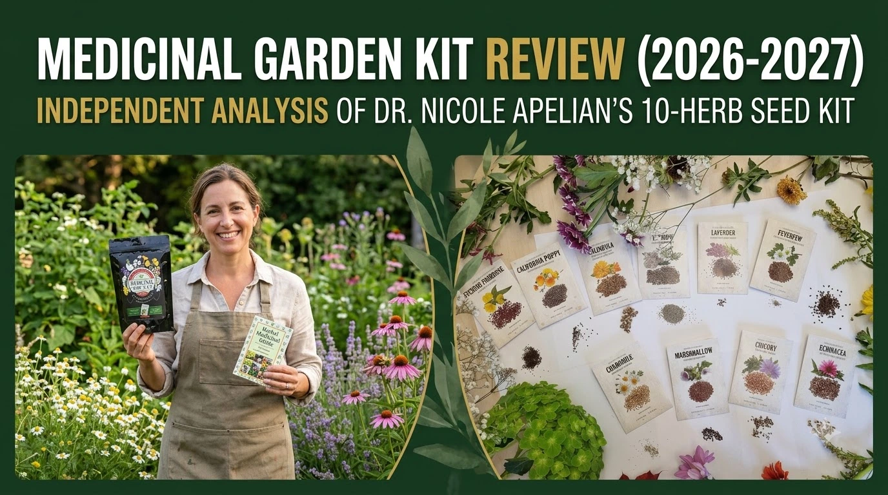
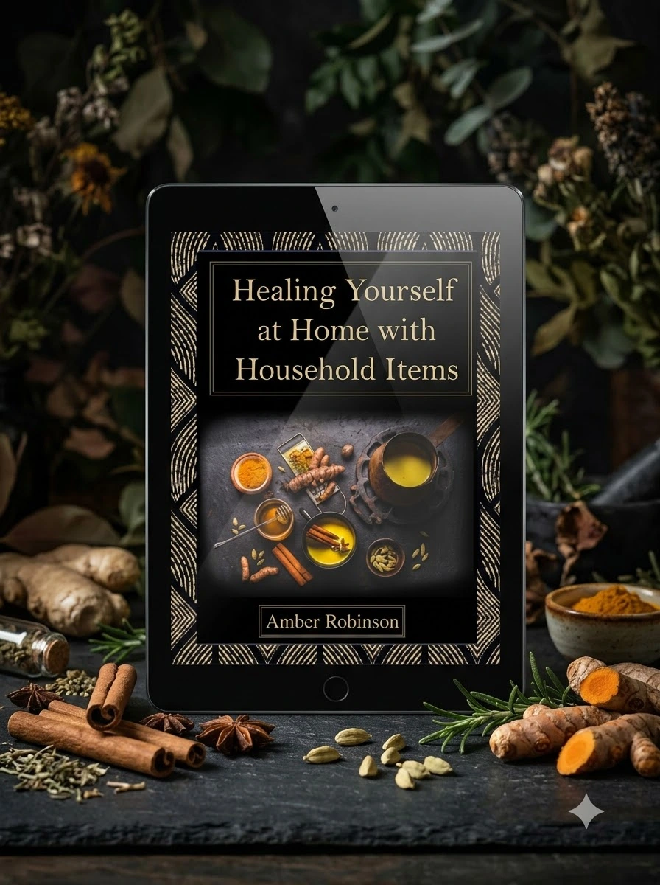

An objective consumer breakdown of the Medicinal Garden Kit by biologist, herbalist, and Alone survivalist Dr. Nicole Apelian, Ph.D.—examining all 4,818 non-GMO US-packaged seeds, the included remedy manual, two bonus guides, and 365-day guarantee.

After earning her Biology degree from McGill University, living with the San Bushmen in the Kalahari, and managing her own Multiple Sclerosis diagnosis through home-grown herbal remedies, Dr. Nicole Apelian assembled 10 foundational medicinal seed packets so households can cultivate a self-renewing backyard apothecary.
Handpicked, high-germination heirloom seeds across 10 individual packets packaged in the United States for long-term storage or immediate planting.
Includes Herbal Medicinal Guide: From Seeds to Remedies covering planting, harvesting, tinctures, salves, poultices, infusions, and decoctions.
Most varieties return every spring or self-seed naturally while attracting pollinators and repelling common garden pests.
Traditional wellness roles, quick backyard applications, and brochure recipes for each seed packet.
| Medicinal Plant | Primary Traditional Use & Quick Remedy | Featured Brochure Preparations |
|---|---|---|
| 1. Chicory | Rich in anti-inflammatory chicoric acid for stiff joints; roasted ground root serves as a prebiotic coffee/tea additive and deep-taproot soil builder. | Chicory Pain Salve, Chicory Coffee, Adrenal Decoction, Sinus Infusion, Liver Tincture |
| 2. Yarrow | Traditional wound healer to help stop bleeding fast; fresh leaf chewed for temporary toothache relief and flowers attract ladybugs and bees. | Stop-Bleeding Poultice, Infused Yarrow Oil, Wound & Bite Tincture, Scar Salve, Digestive Tea |
| 3. California Poppy | Supports deep, restorative sleep without habit-forming sedatives; steep leaves, stems, or flowers 10 minutes for a calming bedtime tea. | Deep Sleep Tincture, Sleep Tea Blend, Analgesic Salve, Herbal Vinegar, Poppy Infusion |
| 4. Marshmallow | High in soothing mucilage that coats the stomach, esophagus, and digestive tract; cold-water root infusion eases heartburn and reflux. | Cold Root Infusion, Stomach Tea, Skin Repair Poultice, Cough Decoction, Throat Syrup |
| 5. Chamomile | Known as "The Gardener's Doctor"; calms digestive muscles, supports deep skin recovery, and relaxes sore muscles in a warm herbal bath. | Eye Compresses, Infused Chamomile Oil, Eczema Salve, Sciatica Tincture, Sitz Bath |
| 6. Evening Primrose | Provides gamma-linolenic acid (GLA) and linolenic acid to nourish skin barriers, nerve cell membranes, and hormonal balance. | Skin & Nerve Infused Oil, Anti-Bruise Poultice, Revitalizing Balm, Lung Tonic |
| 7. Lavender | Aromatic perennial studied for calming anxiety, supporting restful sleep in bedside sachets, and promoting scalp circulation. | Lavender Sleep Tincture, Anxiety Tea, Skin & Scalp Oil, Botanical Hair Mask, Healing Salve |
| 8. Echinacea | Flagship immune-support herb; simmered sliced roots make an immune-boosting decoction while growing plants suppress garden weeds. | Immune Echinacea Tincture, Antiseptic Mouthwash, Anti-Germ Salve, Root Decoction |
| 9. Calendula | Supports skin repair, minimizes scarring on cuts and burns, and promotes healthy lymphatic drainage when brewed as an herbal tea. | Calendula Infused Oil, Wound & Scar Salve, Itch Soak, Burn Spray, Protective Lotion |
| 10. Feverfew | Contains parthenolide in leaves and flower heads to help ease migraines, fevers, and joint inflammation while repelling garden pests. | Anti-Migraine Tincture, Inflamed Joint Oil, Febrifuge Tea, Bruise Compress, Insect Repellent |
Provided automatically with every Medicinal Garden Kit order while promotional kits remain in stock.

Discover how everyday pantry and kitchen staples can be prepared into time-tested home remedies—including Onion Cough Syrup, Pickled Garlic, Vinegar Socks, and Potato Poultices.
Today: 100% FREE with Your Kit
Claim Free Bonus ↗Identify and harvest wild medicinal plants already growing near your yard or neighborhood so you can start making natural remedies immediately while your seeds germinate.
Today: 100% FREE with Your Kit
Claim Free Bonus ↗Every kit includes all 4,818 US-packaged non-GMO seeds, the Seed-to-Remedy manual, 2 free bonus books, and 365-day protection.
Ideal for Family & Gift Sharing
Secure ClickBank Checkout
Your Medicinal Garden Kit is backed by a complete 365-day refund policy. Plant your seeds, harvest your herbs across all four seasons, and try the recipes in Dr. Nicole Apelian's guides—if you aren't delighted with your backyard pharmacy within a full year, simply reach out for a prompt 100% refund.
Each kit contains 10 separate packets totaling 4,818 non-GMO seeds packaged in the USA: Chicory, Yarrow, California Poppy, Marshmallow, Chamomile, Evening Primrose, Lavender, Echinacea, Calendula, and Feverfew.
Every order includes Herbal Medicinal Guide: From Seeds to Remedies, which explains how to plant, care for, and harvest each herb plus step-by-step recipes for tinctures, salves, poultices, infusions, and teas.
Most of the 10 plants are hardy perennials that return each spring or self-seeding annuals that establish themselves after the first season, giving you a recurring backyard pharmacy year after year.
Yes. The seeds are packaged for storage so you can plant immediately or keep extra kits sealed for future seasons and emergency preparedness.
You have a full 365 days from your purchase date to test the seeds and guides. If you are unsatisfied for any reason, contact support for a full refund.
Secure your Medicinal Garden Kit with all 4,818 non-GMO seeds, the Seed-to-Remedy manual, 2 free bonus books ($58 value), and 365-day refund protection while remaining kits are available.
Claim Your Medicinal Garden Kit ↗4,818 Non-GMO US Seeds • 2 Free Bonus Guides • 365-Day Money-Back Guarantee